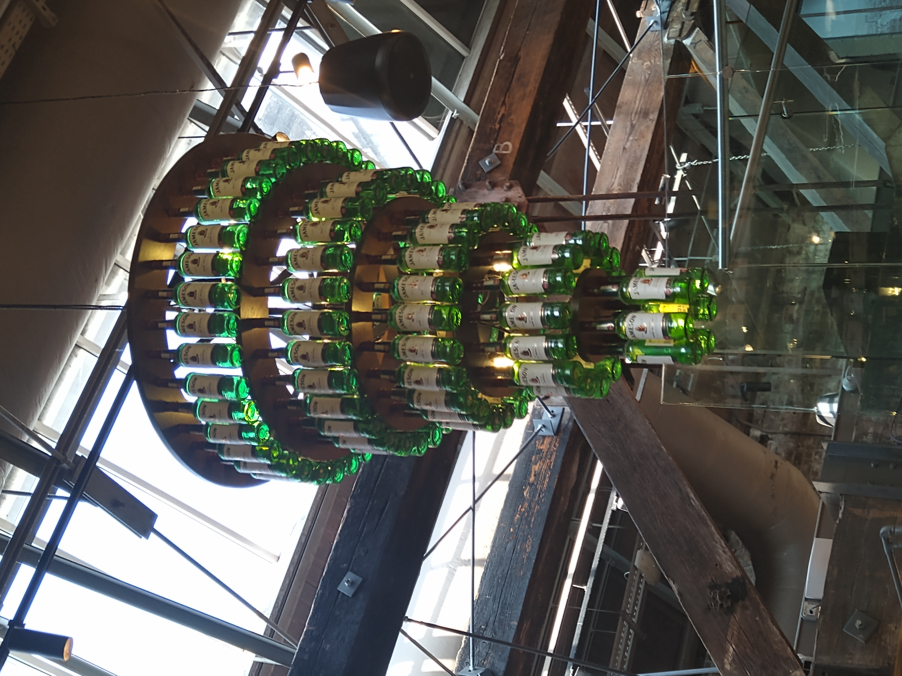
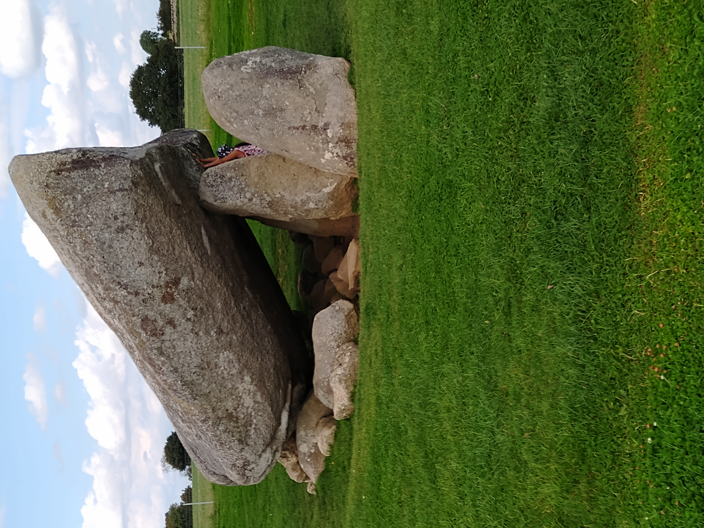
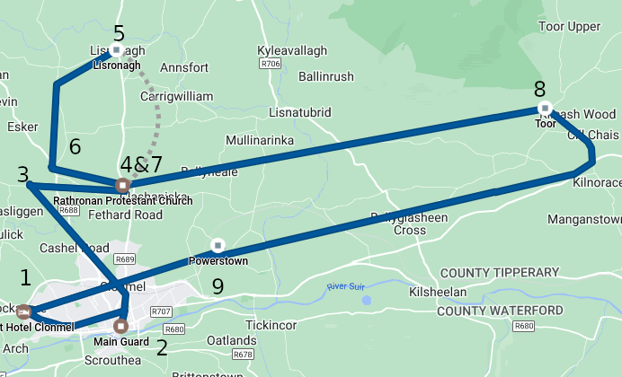
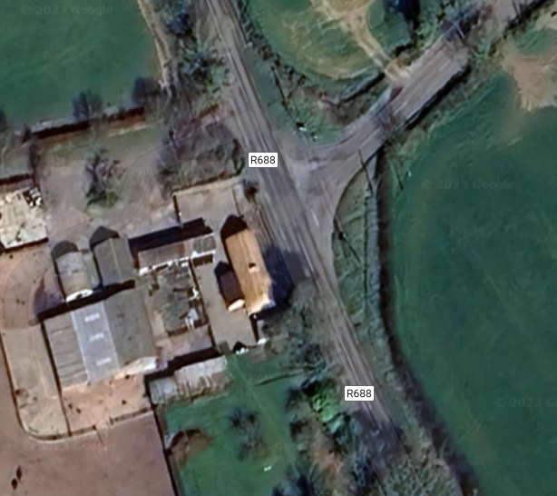
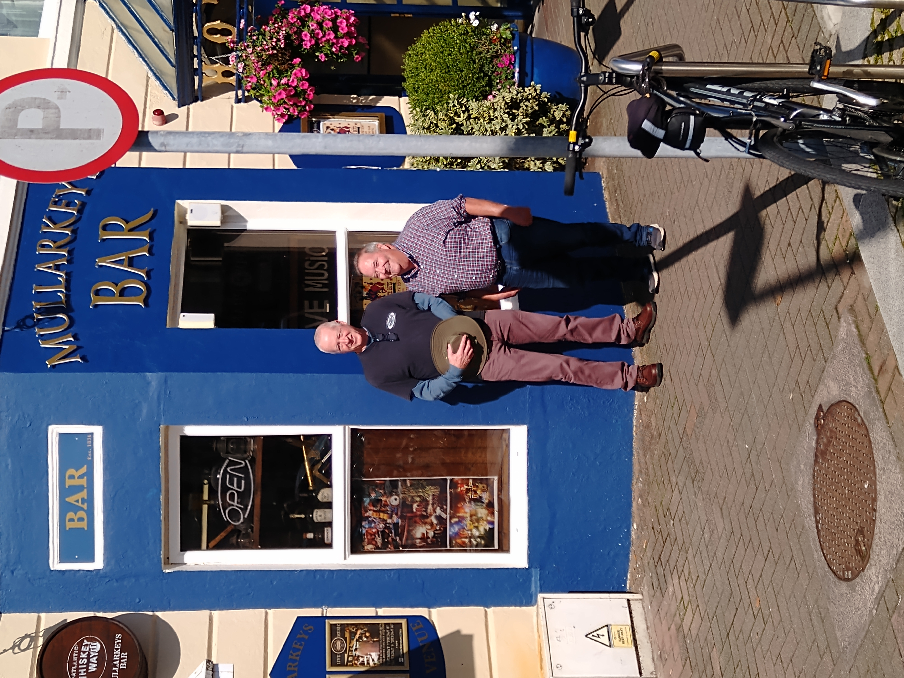
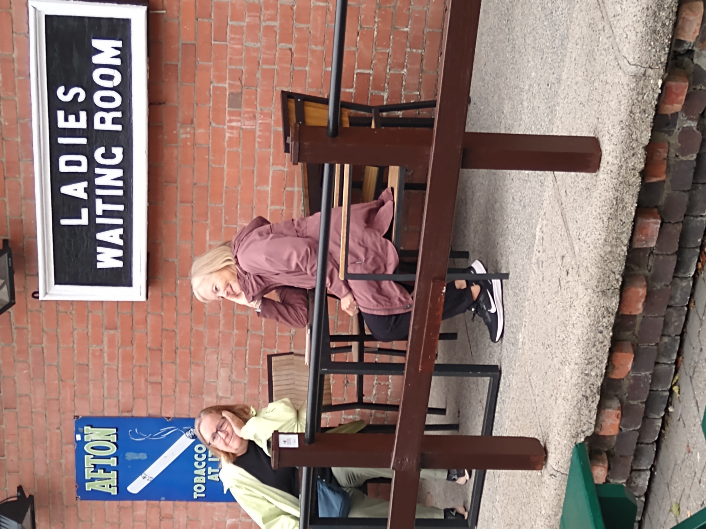

Ireland trip September 2023
Table of Contents
1 Cousins
1.1 Bernie and Caitlín, Westport, Mayo and U.S. cousins: September 14

Figure 1: Rose, Maureen, Katie, Meg, Bernie, Caitlín, Mary Anne

Figure 2: Shu, Dave, Mary, Sue, Tom, Janine
1.2 Keatings in Tipperary: September 10

Figure 3: front: Maureen, John and Margaret, Rose. back: Mike, Pat
2 Dublin
- Jet Lag
- Skylon Hotel
- Hodges Figgis
- Jameson

Figure 4: Jameson chandelier
3 Brownshill Dolman and Carlow Castle: September 9
3.1 Brownshill Dolman
The tomb was built between 4000 and 3000 BC
The capstone weighs an estimated 150 metric tons
|  |  |

3.2 Carlow Castle
4 Clonmel September: 10
4.1 Clonmel
Figure 6: front: Maureen, John and Margaret, Rose. back: Mike, Pat
 |
|
Main Guard to St. John Baptist is 7.7 miles direct
10 miles by road

Figure 7: Google timeline

Figure 8: Rose and J.J
 |
 |
4.2 Rathronan

Figure 9: Russell house, near Rathronan Cemetery

Figure 10: Rathronan Cemetery Gate

Figure 11: Rathronan Cemetery Gate sign

Figure 12: Rathronan Cemetery Church (Church of Ireland)

Figure 13: Rathronan Cemetery
4.2.1 Rathronen Graveyard listing:

Figure 14: sample listing
4.2.2 transcription
https://tipperarystudies.ie/wp-content/uploads/2020/09/Rathronan-Graveyard.pdf
click triangle to expand:
ENTRY 14: John Russell
Erected By John And Thomas Russell, Clonmel, As A Tribute Of Filial Love And Affection To The Memory Of Their Father John Russell, Rathronen, Who Died January 12th 1884 Aged 80 Years. The Above Thomas, Died November 6th 1914. His Daughter Alice Francis, Died May 13th 1917. Of Your Charity Pray For The Soul Of John Russell, Airhill, Who Died 28th September 1911.
ENTRY 17: William Keating
Here Lieth The Body Of William Keating, Who Departed This Life, The 18th Day Of January 1760 Aged 60 Years. Requiescant In Peace Amen. Also His Son Richard, Died April 30th 1812 Aged 72 Years.
ENTRY: 160: Thomas Keating
Here Lieth The Body Of Thomas Keating Of Ballyveelish, Who Died June 26th 1780, Aged 50 Years. Also Hi Son Patrick Keating, Died Dec 1st 1799, Aged 36 Years. His Son Thomas Keating, Died March 28th 1832, Aged 63 Years. And His Daughter Mary Keating, Died April 14th 1816, Aged 23 Years.
ENTRY: 161: ? Keating
O God Be Merciful To The Soul Of ________ Keating, Departed This Life May The 8th 1763, Aged 25 Years. Erected By Paul Keating.
4.2.3 youtube videos of Rathronan Cemetery
Tipperary forgotten graveyard by "Mark T"
Sep 9, 2021. in two parts
Youtube: Ballyclerahan forgotten graveyard part 1
Youtube: Ballyclerahan part 2
4.3 Lisronagh

Figure 15: Ellen, Lawrence, James Keating

Figure 16: Lisronagh

Figure 17: Lisronagh
There is a register for "Lisronagh Castle", but I don't find
any Keatings there:
https://tipperarystudies.ie/wp-content/uploads/2018/03/Clonmel%20Lisronagh%20Castle%20Inscriptions%20reduced.pdf
4.4 Grandma's house
JJ thinks the house might be 250 years old.
It is at 52.390127,-7.727797 on road R688.

Figure 18: Grandma's house

Figure 19: roadsigns across the road

Figure 20: Jim and Alice's kids

Figure 21: JJ, Pat, Maureen, Rose, Mike

Figure 22: Pat, Mike, Maureen, Rose, JJ

Figure 23: House from above
4.5 St. John Baptist Church and graveyard


Figure 25: William Strange … Margaret Strange (nee Keating)
4.6 Powerstown


https://drive.google.com/file/d/1TFDgwnzvGpafa0pwzw5_mmSnj5zg8XvL/view?usp=sharing
Tue 07 Nov 2023 02:31:33 AM CST
5 apple farm

Figure 29: donkeys
6 Ballyconneely

Figure 30: Mularkey

Figure 31: Atlantic near Ballyconneely
7 Pointing, phones, ladies in waiting

Figure 32: In memory of John

Figure 33: Ladies in Waiting

Figure 34: Important phone call
| Olivia did what? | Oh, good, no casualties |
 |
 |